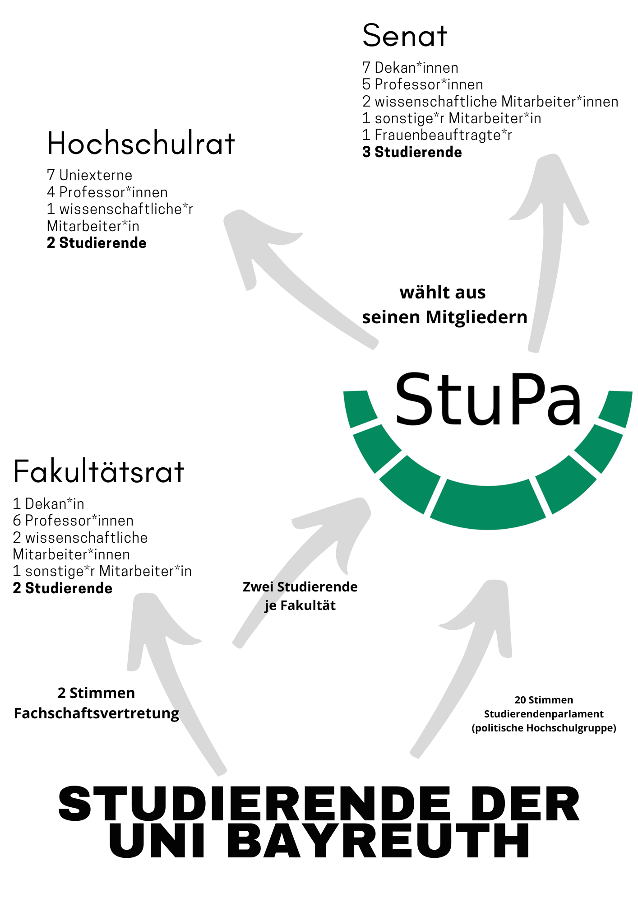

Wir sind die Fachschaft
Mathe Physik Informatik
Chef
Vize
Finanzen
Öffentlichkeitsarbeit
Uni-Kino
Physikerbar
Bierkoordinatorin
Grafiken
Root
Es sind noch bis zum Ende der Hochschulwahl...
Am besten, wir bereiten uns schonmal darauf vor!

Es dürfen pro Wahlvorschlag nur maximal so viele Stimmen abgegeben werden, wie Vertreter(innen) zu wählen sind.
Es dürfen maximal 3 Stimmen pro Person gehäufelt (kumuliert) werden.
| Datum | Mo (15.06.) 12 Uhr - Fr (19.06.) 12 Uhr 2026 |
| Onlinewahl | Wahlportal |
| Am Mi 8-16 Uhr | Waffeln und Kaffee vor der Fachschaft und von 9:30 - 10:15 Uhr Kaffee im AI |
| Dazu benötigt | Wahlbestätigung und Fakultätszugehörigkeit (cmlife) |
FS-Webseite/wahl
Wahlportal
Unser Instagram